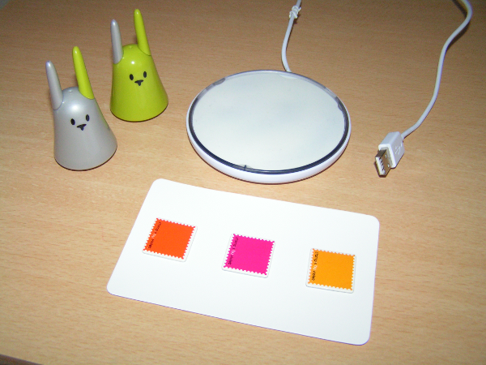

Plugin mirror¶
Go this plugin development information
Purpose¶
Mir:ror plugin allows to use Mir:ror by Violet device.
Mir:ror is a small passive RFID reader which is provided with RFID like litte rabbits (Nanoztag) or Stamps (zTamps). Each RFID element has an unique ID. The plugin will send an event with the ID when a RFID element is near Mir:ror or if you put it far from Mir:ror.
Known issues¶
Using Mir:ror device on (or near) a metallic ground shield may the RFID elements detection fail.
How to plug¶
Just plug USB on your computer. Mir:ror should light on.
Installation¶
Plugins are installed from the user interface administration. See ((Installing_the_packages|this page)) for more details.
Permissions management¶
The needed udev rule is given while installing the plugin. See Setting UDEV rule to apply it.
Plugin configuration¶
| Key | Default value | Description |
|---|---|---|
| device | /dev/mirror | This is the address of the Mir:ror device. |
| service | Service | Distributed services, water, gaz, electricity |
| communication | Communication | Telephony, videophone, mails, messaging |
You can now start the plugin (start button).
Creating a device for the Mir:ror¶
In administration, go to Organization > Devices page. Create a new device like this :
| Field | Suggested value | Description |
|---|---|---|
| Name | Mir:ror | The name you want to give to your Mir:ror device |
| Address | mirror | |
| Feature | RFID.Mirror base | |
| Usage | Mir:ror | |
| Description | a short description (Placement, usage, etc) | |
| Reference | the device reference (model, etc) |
Example :

Attribute the feature to a place and you can now see the status of your Mir:ror (on or off)
Creating a device for a RFID element¶
In administration, go to Organization > Devices page. Create a new device like this : =========== =============================== =========== Field Suggested value Description =========== =============================== =========== Name Green nanoztag The name you want to give to your RFID element Address 000008d00218c10916a8a9000000 The id of the RFID element. To get the id of a RFID element, use this helper : mirror read ** and put the RFID element on the Mir:ror. The RFID id will be displayed. Use it as address. Feature **RFID.Mirror tag Usage Nanoztag Description a short description (Placement, usage, etc) Reference the device reference (model, etc) =========== =============================== ===========
Example :

Attribute the feature to a place and you can now see the status of your RFID element (on or off)
Helpers¶
To get an introduction to helpers, you can read the Helper documentation. To use a helper, the plugin must be stopped.
mirror read¶
mirror read helper will wait for an action on ____ and display it. It is usefull to get RFID identifier.
Example: RFID in¶
$ mirror read /dev/mirror
Device : 000008d00218c10916a8a9000000
Type : present
Current : HIGH
Example: RFID out¶
$ mirror read /dev/mirror
Device : 000008d00218c10916a8a9000000
Type : present
Current : LOW
Example: Mir:ror faced up¶
$ mirror read /dev/mirror
Device : mirror
Type : activated
Current : HIGH
Example: Mir:ror faced down¶
$ mirror read /dev/mirror
Device : mirror
Type : activated
Current : LOW
I had some problem and need to run “od -x < /dev/mirror” at least once to make my mirror working.